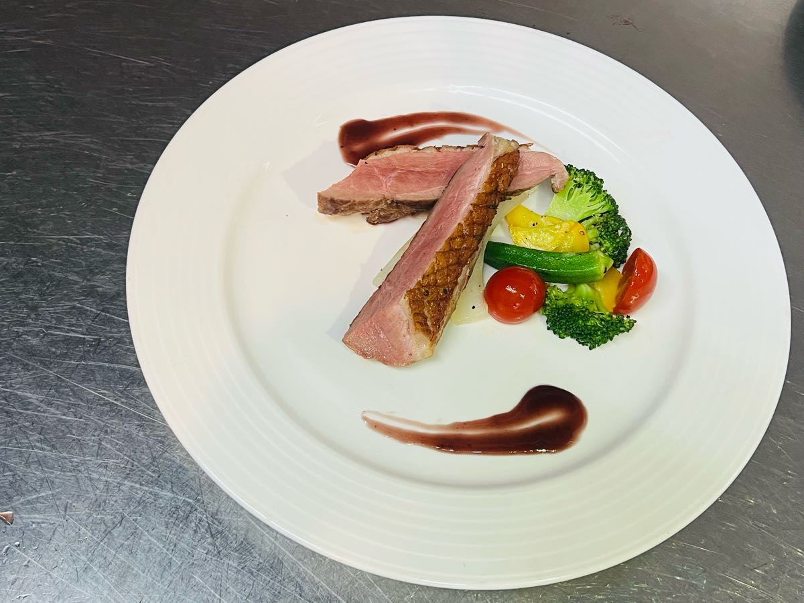

-羊排上層油脂、筋膜去掉，骨頭膜剃乾淨（去下來的肉、油不要丟）
-小黑+少許油，煎多餘的肉、油脂，至上色、香加一匙羊高湯，丟進小白+2片月桂葉
-紅蔥頭切末，留一顆、蒜頭留2-3顆
-蘑菇一開二
-玉米筍切段
-番茄一開二
-甘藍（進口高麗菜）外層剝掉，一開二
-杏包菇（大顆）一開四，切面朝上切網狀
-奶油丟一塊到小黑，小火融化，奶油冒泡離火靜置
-倒油出來，牛奶不要倒出來
-小黑+油，熱鍋後下羊排，三面煎上色
-小配菜盤鋪鋁箔紙，烤5分鐘
-燙玉米筍、甘藍燙一分左右，不要燙到透
-小黑+少許油不要太多（菇類會吸油）煎杏包菇、蘑菇（不用很熟）
-大白+一半奶油、紅蔥頭、蒜頭末、迷迭、玉米筍、番茄、杏包菇、蘑菇、甘藍（壓中間壓得下去代表熟了）+黑胡椒粒、鹽、胡椒、雞粉
-小黑不加油熱鍋+烤好的羊排後下剛剛倒起來的奶油、蒜頭、紅蔥頭、迷迭，蒜頭、紅蔥頭有味道後夾起來（奶油不夠+沙拉油）
-羊排煎至少5-6分熟離火+另一半奶油、鹽，夾起用鋁箔蓋住
-小黑稍微沖一下+紅酒、烤過的羊汁、少許糖、濃縮到快沒有後+羊高湯、少許黃汁粉水勾芡

第一道香煎鴨胸佐紅酒醬介紹
 第二道茄汁義大利麵
第二道茄汁義大利麵
 第五道
第五道